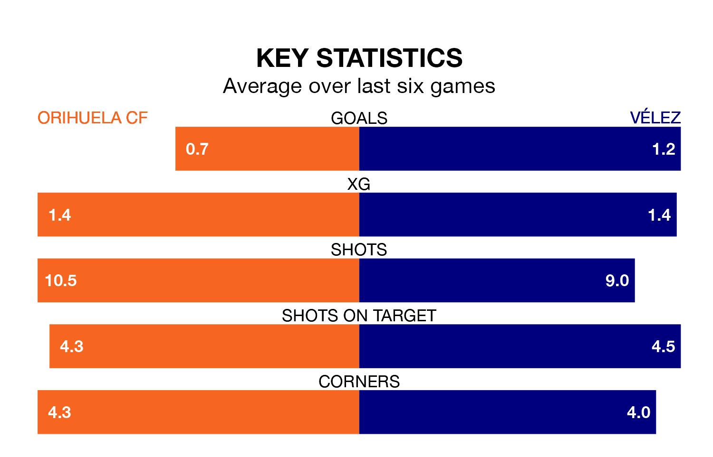

Vélez travel to Orihuela CF on Sunday in Segunda División RFEF Group 4.
The visitors come into the game on the back of a defeat in their last match, having lost to CD El Palo 2-0 at home.
Orihuela, meanwhile, drew their last match, 0-0 against Sevilla B.
With 22 goals in 18 games so far this season, Vélez are scoring more than average in the league with 1.2 goals per game. But they are conceding more than average too, letting in 21 goals at a rate of 1.2 per game.
Orihuela, meanwhile, are average scorers, with 1.0 goal per game. They have conceded 1.3 goals per game.
The hosts are 12th in the table after 18 games, of which they have won six and drawn five, earning 23 points.
The away team are four places ahead of Orihuela in eighth, with six wins and eight draws putting them on 26 points.
Orihuela are in mixed form in Segunda División RFEF Group 4, with two wins and two draws from their last six games.
And also with two wins and two draws over that period, Vélez's form is identical – they have both taken eight points from 18.
Updated: 14:53 (UTC), 16/01/24